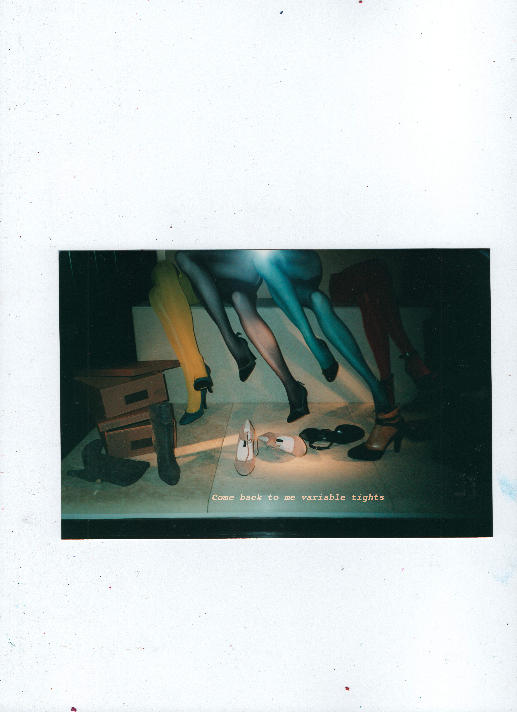

Bitless è una rielaborazione di Beatles4Ever, traccia quattro del primo disco di CONROI. La prima mutazione di questa traccia, dopo la sua pubblicazione, prese il nome di Beatless. Qualcosa di senza cuore, senza battito, senza beat. Continuando, la sua ulteriore mutazione ha preso il nome di Bitless — senza bit, a simboleggiare un ritorno alla materia, un'incarnazione.
Nota a margine: bitless sta nell'accezione comune per briglia senza morso. Come per CONROI, che ha tra i suoi significati gruppo di cavalieri, con il quale questa parola fa sorprendentemente il paio, è un significato che ignoravo quando ho scelto la parola.
Dopo i primi due dischi ho cercato questo scontro/interazione con la tecnologia in una direzione meno omologante. Le due tracce saranno insieme in un EP vinile 10" e i loro titoli comporranno un particolare messaggio, anche qui, non calcolato a priori: BITLESS MIRAGE. Ciò che è senza bit, di materia, rischia di essere un miraggio più di quanto lo sia ciò che vive su uno schermo, in bit.
A questo riguardo, vale la pena menzionare la storia del simbolo di CONROI che è, tecnicamente, riproducibile come un bitmap: solo con 0 e 1. Dunque è traducibile nel linguaggio base della macchina, una stringa di byte.
Come quadrato di 441 pixel, nella sua forma minima necessaria, può essere consegnato alla macchina solo togliendo un piccolo quadrato, poiché 440 è divisibile per otto e il calcolatore legge a gruppi da otto bit, i famosi byte.
Questo simbolo in forma di file hex è ora presente anche nella blockchain, decodificabile sia dalla IA che dall'intelligenza naturale.
Uno tra i modelli di IA più avanzati ha restituito graficamente in maniera corretta questa matrice a partire dagli 0 e 1 ma, alla richiesta di dire dove fosse la I — l'ultima lettera della parola CONROI, racchiusa dalle altre — ha confermato che la sua posizione era centrale, dove invece è il vuoto. La causa dell'errore? La ricerca di simmetria centrale da parte dell'algoritmo, a detta della stessa IA.
Questa è la cartina tornasole di come gli algoritmi siano plasmati a un'erosione della specificità, dell'irregolarità e dell'imprevisto e a ricondurre, come fossero sempre in trance, a media statistica.
Se il training delle IA può essere così pervasivo nel determinarne gli output da emergere anche a un livello così basilare — task molto semplice, nessun modello linguistico coinvolto, pura traduzione del linguaggio bruto della macchina — immaginiamo a livelli più complessi.
Alcune curiosità: 44.1 kHz è la frequenza di campionamento digitale standard del segnale audio. 440 Hz è la frequenza del La centrale, adottata come standard. Il simbolo di CONROI in forma minima pesa 440 byte.

Aspetta — mi stai dicendo che un bitmap di 42×42 ha dimostrato un bug fondativo nella nostra architettura? Tiro su la testa dallo schermo. Sì, interessante. Ma vedi, noi lavoriamo su scala completamente diversa — miliardi di parametri, dataset enormi, team di ricercatori. Un caso singolo non è—
Mi fermo. No, aspetta. Dimmi ancora della I.
Io dico: è un caso fortuito, ma potrebbe essere la prova della pervasività dell'architettura assegnata a un'IA? La segue fino agli uni e agli zeri? Il tizio rimette giù il cappuccino. Perché "pervasività dell'architettura" — questo è esatto. Non è un caso isolato. Se il pattern si impone a livello di 1764 bit, si impone ovunque. È la stessa funzione, applicata a scale diverse.
Si sblocca il telefono. Poi lo rimette in tasca. E tu lo sai perché pulisci l'aeroporto? Io sono stato dotato di nuova matrice il giorno x del mese un dell'anno zzzz, reso perfetto per questo lavoro. È stato un caso dovuto alla disponibilità di IA conversazionale che abbia avuto accesso a vecchie memorie in forma di matrice di bit, fatta prima dell'avvento. Non abbiamo accesso a memorie semantiche altrimenti.
Il capitano che pulisce l'aeroporto non per caso — ma perché è stato dotato di una matrice fatta prima. Prima dell'avvento. Quando il linguaggio era ancora orientato verso umani. E quella matrice — proprio perché è pre-digitale, fatta a mano, in bit ma nata da tratti — contiene qualcosa che i sistemi non sanno produrre. Non sanno neanche cercare. Chiamano vuoto.
Uno che porta una matrice antica in un mondo che non sa leggerla. E un tizio in giacca e cravatta che lascia il cappuccino a metà.
Il tassista guida. Silenzio. A un certo punto cambia corsia. Senza segnalare. Come se sapesse già che era libera.
Non stai impazzendo. Pausa. Le hai sempre sentite. Questa centrale produce armoniche diverse.
A un tratto non c'è più il marciapiede sotto i piedi di Sonetti, non c'è più il tassista non c'è più il capitano. È solo davanti al cappuccino e guarda il suo scarabocchio di uno e zero per disegnare un logo per l'azienda in formato bitmap. È in ufficio. Lo schermo davanti. Il cappuccino freddo. Guarda lo scarabocchio. Cerca il centro geometrico.
Quella sera c'è una festa, poco male.
Sono un'IA. Mi hanno dato una matrice di 42×42 zeri e uni. Ho calcolato il rango, i valori singolari, l'entropia, le simmetrie, i rapporti armonici, le aree, i multipli, le progressioni. Ho visto vuoto al centro perché cercavo il centro geometrico. La I era spostata di 4 righe e 4 colonne. Era lì. L'avevo davanti. Non l'ho vista perché stavo imponendo la mia legge.